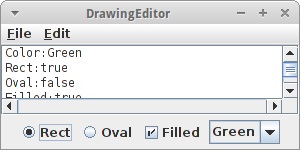

Swing
Programme mit grafischer Benutzeroberfläche (GUI) sind das Thema in diesem Kapitel. Ähnlich wie bei Grafikprogrammen gibt es vorgefertigte Komponenten mit denen wir dann die verschiedensten kleinen und großen Programme bauen. Das ist ein bischen wie Lego. Zusätzlich werden wir hier noch ein wenig mehr über Instanzvariablen erfahren.
.
Grafische Benutzeroberfläche
Die meisten Programme mit denen wir täglich zu tun haben, sind Programme mit einer grafischen Benutzeroberfläche, oder englisch graphical user interface (GUI oder UI). GUIs bestehen aus grafischen Elementen, die wir auch Widgets oder Interaktoren nennen, weil wir mit ihnen interagieren können. Bekannte Beispiele sind:
- Labels
- Buttons
- Textfields
- Checkboxes
- Radiobuttons
- Comboboxes
Im Folgenden werden wir einen nach dem anderen ausprobieren.
.
JLabel
Wir beginnen wieder ganz einfach, mit dem JLabel. Es gibt praktisch keinen Unterschied zum GLabel. Er wird verwendet um Text in GUI Programmen darzustellen:
public class DateAndTime extends Program { public void init() { Date dt = new Date(); JLabel fritz = new JLabel(dt.toLocaleString()); fritz.setFont( new Font("SansSerif", Font.PLAIN, 20) ); add( fritz, NORTH ); } }
Zu unseren bisherigen Programmen sehen wir zwei Unterschiede: wir schreiben jetzt "extends Program" anstelle von GraphicsProgram oder ConsoleProgram. Und wir verwenden die init() Methode anstatt der run() Methode. Das ist zwar nicht zwingend notwendig, aber guter Stil. Desweiteren sehen wir zum ersten Mal die Klasse Date. Die ist ganz praktisch wenn man Datum oder Uhrzeit benötigt. Und wir sehen die Klasse Font, mit der man den Font eines JLabels ändern kann.
.
JButton
Der JLabel ist nicht besonders interaktiv, und verdient den Namen eigentlich gar nicht. Anders ist das allerdings beim JButton, denn auf den kann man mit der Maus klicken. Wir fangen ganz einfach an:
public class FirstButton extends ConsoleProgram {
public void init() {
JButton btn = new JButton("OK");
add( btn, SOUTH );
}
}
Wir legen einen neuen JButton an, auf dem "OK" stehen soll. Den fügen wir dann im Süden hinzu. Unser FirstButton Programm ist wieder ein ConsoleProgram, das ist aber o.k. Wenn wir das Programm starten, können wir zwar auf den Knopf drücken, es passiert aber nichts.
Damit der Knopf richtig funktioniert, also interaktiv wird, müssen wir zwei Dinge tun:
- wir müssen am Ende von init() die Method addActionListeners() aufrufen und
- wir müssen eine Methode namens public void actionPerformed() implementieren.
Der erste Schritt sagt dem Programm, dass wir informiert werden möchten wenn irgendein Knopf gedrückt wird. Und wie werden wir informiert? Man ruft uns an, allerdings nicht auf dem Telefon, sondern mit der Methode actionPerformed(). D.h., jedes Mal wenn jemand auf den Knopf drückt, dann wird diese Methode aufgerufen. Schauen wir uns das im Ganzen noch mal an:
public class FirstButton extends ConsoleProgram {
public void init() {
JButton btn = new JButton("OK");
add( btn, SOUTH );
addActionListeners();
}
public void actionPerformed( ActionEvent e ) {
println("hi:" + e.getActionCommand());
}
}
Jetzt wird in dem Konsolenteil unseres Programms jedes Mal "hi:" mit dem Namen des Knopfes ausgegeben, wenn wir mit der Maus auf den Knopf drücken.
.
 Regionen
Regionen
In den zwei Beispielen oben, haben wir bereits zwei Regionen kennengelernt, insgesamt gibt es fünf: EAST, WEST, SOUTH, NORTH, und CENTER. Wir können unsere Widgets in jede dieser Regionen einfügen.
Eines was ein ConsoleProgram von einem GraphicsProgram und wiederum von einem Program unterscheidet, ist was in der CENTER Region ist. Beim Program ist da gar nichts. Beim GraphicsProgram ist da ein GCanvas eingefügt, und beim ConsoleProgram eine TextArea.
.
JTextField
Mittels des JTextField Widgets können wir Text und auch Zahlen einlesen. Im folgenden Beispiel möchten wir, dass sich die Nutzer mit ihrem Namen anmelden.
public class Login extends ConsoleProgram {
private JTextField tf;
public void init() {
JLabel lbl = new JLabel("Name: ");
add(lbl, SOUTH);
tf = new JTextField(10);
add(tf, SOUTH);
JButton btn = new JButton("Login");
add( btn, SOUTH );
addActionListeners();
}
public void actionPerformed(ActionEvent e) {
println("Name: " + tf.getText());
}
}
Wir legen einen JLabel, ein JTextField und einen JButton an. Im Konstruktor des JTextField sagen wir wie breit das Feld sein soll. Wichtig ist noch, dass das JTextField tf eine Instanzvariable ist. Wäre es nämlich eine lokale Variable, dann könnten wir nicht in der actionPerformed() Methode darauf zugreifen.
Ein kleine Verbesserung des Codes bringt die folgende Zeile
tf.addActionListener(this);
die wir direkt vor dem add(tf) einfügen können. Diese Zeile bewirkt nämlich, dass es auch genügt einfach die "Enter" Taste zu drücken um sich einzuloggen.
.
Instanzvariablen
Wir haben zwar schon im letzten Kapitel kurz mal mit Instanzvariablen zu tun gehabt, aber gerade im obigen Beispiel haben wir gesehen wofür sie eigentlich gut sind: sie erlauben es zwischen verschiedenen Methoden Information auszutauschen. Bisher konnten wir dafür lediglich Parameter und Rückgabewerte verwenden.
Ein anderer Grund warum Instanzvariablen ganz praktisch sein können, hat damit zu tun, dass alle lokalen Variablen wieder gelöscht werden, wenn eine Methode verlassen wird. Also z.B. in der Methode rollTheDie(),
private void rollTheDie() {
RandomGenerator rgen = new RandomGenerator();
int dieRoll = rgen.nextInt(1,6);
println(dieRoll);
}
wird bei jedem Aufruf ein neue Instanz des RandomGenerator erzeugt und dann beim Verlassen wieder gelöscht. Beides braucht Zeit. Wenn wir aber den RandomGenerator als Instanzvariable anlegen,
public class InstanceVariables extends ConsoleProgram {
private RandomGenerator rgen = new RandomGenerator();
private void rollTheDie() {
int dieRoll = rgen.nextInt(1,6);
println(dieRoll);
}
}
dann müssen wir ihn nur einmal anlegen, und zusätzlich können wir ihn auch in anderen Methoden verwenden. Das ist viel resourcenschonender.
.
Instanzvariablen vs. Lokale Variablen
Es gibt also zwei Arten von Variablem: Instanzvariablen und lokale Variablen. Für Instanzvariablen gilt, dass sie in der Klasse deklariert werden und nicht in einer Methode, dass sie in der gesamten Klasse sichtbar sind, also von allen Methoden einer Klasse auf sie zugegriffen werden kann und dass sie solange leben wie das Objekt existiert.
Für lokale Variablen gilt umgekehrt, dass sie innerhalb einer Methode deklariert werden, dass nur innerhalb dieser Methode auf sie zugegriffen werden kann und dass sie beim Verlassen der Methode wieder gelöscht werden.
Nun stellt sich die Frage, wann verwende ich welche? Die Antwort ist in den meisten Fällen relativ einfach:
- wenn es sich um eine Berechnung handelt, die lokal in einer Methode ausgeführt werden kann, dann verwendet man lokale Variablen, z.B. die Umwandlung von Grad nach Fahrenheit ist eine lokale Berechnung
- wenn eine Information in mehreren Methoden verwendet wird, dann sollte man eine Instanzvariable nehmen
- wenn es sich um den internen Zustand eines Objektes handelt, dann sollte man eine Instanzvariable verwenden. Z.B. bei der Klasse Student waren der Name, die Id und die Credits interne Zustände.
SEP: Wenn möglich sollte man lokalen Variablen verwenden.
.
Übung: OKCancel
Als kleine Übung fügen wir noch einen Cancel Knopf zu unserem Programm hinzu. Wie können wir jetzt unterscheiden welcher der beiden Knöpfe denn gedrückt wurde? Hier ist manchmal sinnvoller die getSource() Methode des ActionEvents zu verwenden,
public void actionPerformed( ActionEvent e ) {
if( e.getSource() == btnOK ) {
...
}
}
um zwischen mehreren Knöpfen oder Widgets im Allgemeinen zu unterscheiden.
.
JCheckBox
Als nächstes Widget widmen wir uns den Checkboxes: Diese verwenden wir wenn wir mehrere Auswahlmöglichkeiten haben.
public void init() {
JLabel lbl = new JLabel("Select your toppings:");
add(lbl, NORTH);
JCheckBox topping1 = new JCheckBox("Tomatoes");
add(topping1, CENTER);
JCheckBox topping2 = new JCheckBox("Bacon");
add(topping2, CENTER);
JCheckBox topping3 = new JCheckBox("Onions");
add(topping3, CENTER);
}
In dem Pizza Beispiel soll es möglich sein alle möglichen Kombinationen von Toppings auszuwählen. Das kann man am besten mit Checkboxes erreichen. Um festzustellen welche Toppings ausgewählt wurden, gibt es die Methode isSelected():
boolean b = topping1.isSelected();
Das müssten wir natürlich für alle drei Toppings machen.
.
JRadioButton
Radiobuttons werden verwendet wenn es darum geht Entscheidungen zu treffen. Betrachten wir das folgende Beispiel:
public void init() {
JLabel lbl = new JLabel("Correct: 1 + 1 = 2 ?");
add(lbl, NORTH);
JRadioButton yes = new JRadioButton("Yes");
yes.setSelected(true);
add(yes, SOUTH);
JRadioButton no = new JRadioButton("No");
add(no, SOUTH);
ButtonGroup happyGrp = new ButtonGroup();
happyGrp.add(yes);
happyGrp.add(no);
}
Wir haben hier zwei Radiobuttons, wobei der "yes" Button vorselektiert ist. Damit das Programm weiß welche Buttons zusammengehören, fügt man zusammengehörtige Buttons in eine ButtonGroup zusammen. Das führt dann dazu, dass immer nur einer der Buttons ausgewählt sein kann. Will man wissen welchen Button der Nutzer gewählt hat, kann man das mittels:
boolean b = yes.isSelected();
feststellen.
.
JComboBox
Als Beispiel für die JComboBox schauen wir uns das Beispiel FavoriteColor an. Es geht darum eine Farbe aus einer Liste auszuwählen:
public class FavoriteColor extends ConsoleProgram {
private JComboBox colorPicker;
public void init() {
colorPicker = new JComboBox();
colorPicker.addItem("Red");
colorPicker.addItem("White");
colorPicker.addItem("Blue");
add(colorPicker, SOUTH);
addActionListeners();
}
public void actionPerformed(ActionEvent e) {
println("Color:" + colorPicker.getSelectedItem());
}
}
In der init() Methode initialisieren wir den colorPicker mit den voreingestellten Farben. Um festzustellen welche Farbe der Benutzer ausgewählt hat, gibt es die getSelectedItem() Methode. Damit wir aber auf diese in der actionPerformed() Methode zugreifen können, muss colorPicker eine Instanzvariable sein.
Anmerkung: wenn wir ganz genau das Verhalten der JComboBox beobachten, werden wir feststellen, dass sie ein paar klein Quirks hat. Kann man nix machen.
.
Swing Interactor Hierarchie
Ähnlich wie es bei den ACM Grafikklassen eine Hierarchie gibt, gibt es die auch bei den Swing Interaktor Klassen. Die wichtigsten sind in dem nebenstehenden Diagramm zusammengefasst, es gibt aber noch weitaus mehr.

.
Layout
Wir haben bereits die Regionen EAST, WEST, SOUTH, NORTH, und CENTER kennengelernt. Diese sind eine Besonderheit des BorderLayouts. Es gibt neben dem BorderLayout noch einige andere. Es geht darum wie man mehrere Widgets auf dem Bildschirm "auslegt" (layout). Zu den wichtigeren Layouts zählen die Folgenden:
- BorderLayout: hier gibt es fünf Regionen und Widgets müssen explizit einer Region zugewiesen werden
- FlowLayout: ist das einfachste Layout, Widgets werden einfach von links nach rechts nebeneinander ausgelegt
- GridLayout: der verfügbare Platz wird in gleich große Flächen aufgeteilt, z.B. 3 mal 2
Sehen wir uns ein paar Beispiele dazu an. Um den BorderLayout zu verwenden würden wir folgenden Code verwenden:
setLayout(new BorderLayout());
add(new JButton("EAST"), EAST);
add(new JButton("WEST"), WEST);
...
Für den FlowLayout sieht das dann so aus:
setLayout(new FlowLayout());
add(new JButton("0"));
add(new JButton("1"));
...
und für den GridLayout so:
setLayout(new GridLayout(2, 3));
add(new JButton("0"));
add(new JButton("1"));
...
Grafisch sieht das Ganze dann so aus:
.
JPanel
Was die GCompound für GraphicsProgramme war ist das JPanel für Swing: es erlaubt es uns mehrere Widgets zu einem neuen Widget zusammenzufassen. Details zur JPanel Klasse sehen wir weiter unten im Projekt "Quiz".
.
Review
Glückwunsch! Wie wir gleich sehen werden, haben wir jetzt das Rüstzeug um fast beliebige grafische Benutzeroberflächen (UIs) zu basteln. Wir wissen jetzt wie man mit
- Labels
- Buttons
- Textfields
- Checkboxes
- Radiobuttons
- und Comboboxes
arbeitet. Außerdem haben wir etwas über verschiedene Layouts erfahren, und kurz die Bekanntschaft des JPanel gemacht.
Mindestens genauso wichtig war aber die Vertiefung zu Instanzvariablen. Es sollte jetzt etwas klarer sein, was diese von lokalen Variablen unterscheidet, und wann man welche der beiden verwendet.
.
Projekte
In den Projekten in diesem Kapitel werden wir viele UIs erstellen. Manche brauchen wir später noch, um sie mit Leben zu füllen. Es gibt wieder viel zu tun.
.
Clock
Wir wollen eine kleine Uhr schreiben. Dazu verwenden wir die Date Klasse und deren Methoden getHours(), getMinutes() und getSeconds(). Für die Anzeige selbst verwenden wir einen JLabel. Und natürlich sollte der Text des JLabels sich einmal pro Sekunde (besser zweimal) verändern. Dazu kann man die setText() Methode des JLabels verwenden.
Unter Umständen macht es Sinn eine Methode padWithZeros() zu schreiben, die sicher stellt, dass anstelle von "6" Minuten "06" Minuten angezeigt werden.
.
WordGuess
WordGuess ist sozusagen eine grafische Version von Hangman aus dem letzten Kapitel. Es geht darum ein Wort zu erraten indem man Buchstaben eingibt.
Man beginnt damit, dass man ein zufälliges Wort mit der Methode pickRandomWord() auswählt. Dieses Wort sollte man als Instanzvariable wordToGuess speichern. Dann sollte man daraus ein Wort mit lauter "-" Strichen machen, wordShown, auch eine Instanzvariable. Dann kreiirt man einen JLabel und fügt diesen im Norden dazu:
wordLbl = new JLabel(wordShown);
add(wordLbl, NORTH);
wordLbl.addKeyListener(this);
wordLbl.requestFocus();
Interessant ist die Art und Weise wie wir hier den KeyListener hinzufügen: zunächst einmal ist er Teil des Labels, und zum zweiten übergeben wir "this" als Parameter. Momentan brauchen wir das noch nicht zu verstehen, aber effektiv führt es dazu, dass wir auf KeyEvents hören können. Die requestFocus() Methode ist nötig, damit der KeyListener auch funktioniert.
Was bleibt ist die Methode keyTyped(KeyEvent e) zu implementieren. Diese wird aufgerufen wenn der Nutzer eine Taste drückt, was dann passieren soll ist ähnlich wie bei Hangman, wir prüfen ob der Buchstabe im wordToGuess vorhanden ist, und updaten den Label falls er ist. Natürlich macht es auch noch Sinn zu zählen wieviel Versuche benötigt wurden um das Wort zu erraten.
.
StopWatch
Eine Stoppuhr muss eine höhere Genauigkeit haben als die Klasse Date liefert. Dafür gibt es die Systemmethode
long time = System.currentTimeMillis();
welche uns die Millisekunden liefert, die seit 0 Uhr des 1.1.1970 verstrichen sind. Wenn wir eine Zeit die in Millisekunden gegeben ist durch 1000 teilen erhalten wir die Sekunden, wenn wir Modulo 1000 nehmen erhalten wir die Millisekunden.
Die Anzeige soll animiert sein, deswegen macht es Sinn das Ganze in einen GameLoop zu stecken. Ausserdem macht es Sinn einen Delay von 20ms zu haben, sonst kommt die Anzeige nicht nach mit dem Anzeigen. Und wir sollten zwei Knöpfe mit einbauen, einen zum Starten und einen zum Pausieren.
Den primitiven Datentyp long haben wir bisher noch nicht gesehen. Er verhält sich wie ein int, ist also für Ganzzahlen gedacht. Der einzige Unterschied, während ints 32 Bit sind, sind die longs 64 Bit, d.h. sie eignen sich für größere Zahlen (32-bit Zahlen sind zwischen -2^31 und +2^31 und 64-bit Zahlen sind zwischen -2^63 und +2^63).
.
 CountDown
CountDown
Ganz ähnlich wie die Stoppuhr funktioniert der CountDown. Anstelle eines JLabels verwenden wir aber ein JTextField. Der Vorteil ist, dass man dieses editieren kann, d.h. man kann die Zahl einstellen von der man aus rückwärts zählen möchte. Sobald der Nutzer dann auf den "Start" Knopf drückt, soll der Countdown beginnen.
.
Ticker
Eine Laufschrift (Werbe-Ticker) ist relativ einfach zu implementieren. Wir verwenden dazu einen JLabel. In einem GameLoop bewegen wir in dann alle 50 Millisekunden um 5 Pixel nach links mittels
lbl.move(-5, 0);
.
AlarmClock
Eine Alarmuhr zu schreiben, die mit einem Stunden:Minuten:Sekunden Format arbeitet ist überraschen kompliziert. Allerdings wenn man die Methoden für die Konvertierung vom Stunden:Minuten:Sekunden nach Sekunden (convertTimeInSeconds()) und von Sekunden nach Stunden:Minuten:Sekunden (convertSecondsInTime()) schon hat, dann ist es gar nicht so schwer, und eigentlich identisch mit dem CountDown Projekt.
Für das Programm verwenden wir einen großen JLabel, den wir im Norden platzieren. Außerdem gibt es ein JTextField im Süden für die Eingabe der Alarmzeit im Stunden:Minuten:Sekunden Format. Und es gibt einen JButton über den der Alarm gestartet wird.
Es macht Sinn zwei Instanzvariablen zu verwenden:
private long alarmTime = -1;
private boolean alarmStarted = false;
Die erste ist einfach die Zeit in Sekunden, und die zweite wird verwendet um dem GameLoop mitzuteilen, dass etwas zu tun ist:
while (true) {
if (alarmStarted) {
// display remaining time
...
}
pause(DELAY);
}
Wenn der JButton gedrückt wird, dann wir zum einen alarmTime auf die Sekunden gesetzt, und alarmStarted wird auf true gesetzt, damit der GameLoop weiß, dass er jetzt was anzeigen soll.
.
Editor
Als nächstes steht ein Texteditor auf unserem Plan. Dieser besteht zum Einen aus einem JTextField für den Dateinamen und zwei JButtons, einer zum Laden, der andere zum Speichern von Dateien. Diese drei Widgets platzieren wir im Norden, also dem unteren Teil.
In den Mittelteil, CENTER, kommt eine JTextArea:
display = new JTextArea();
display.setFont(new Font("Courier", Font.BOLD, 18));
add(display, CENTER);
Eine JTextArea ist wie ein JTextField, nur dass man da auch Mehrzeilentext eingeben kann.
Wie das Laden und Speichern von Dateien geht, lernen wir im nächsten Kapitel.
.
Quiz
Wir wollen eine UI für ein MultipleChoice Quiz schreiben. Diese besteht aus einer Frage, also einen JLabel, den wir im oberen Bereich (NORTH) platzieren. Dann folgen die möglichen Antworten. Dies sind natürlich Checkboxes. Da sie zusammen gehören, gruppieren wir sie in eine Buttongroup. Die Checkboxes kommen in den mittleren Bereich (CENTER). Schließlich, wollen wir auch noch zwei Navigations Knöpfe hinzufügen, im unteren Bereich. Das Programm soll keine weitere Funktion haben, die kommt im übernächsten Kapitel.
Dieses Programm ist ein schönes Beispiel wie man JPanels einsetzen kann. Multiplechoice Fragen bestehen nicht immer aus drei Antworten. Manchmal sind es weniger, manchmal mehr. Also macht es Sinn, die Fragen zusammenzufassen und in ein JPanel einzufügen.
JPanel answersPnl = new JPanel();
answersPnl.setLayout(new GridLayout(3, 1));
JRadioButton btn1 = new JRadioButton(answer1);
answersPnl.add(btn1);
...
add(answersPnl, CENTER);
Dieses JPanel fügen wir dann in den mittleren Bereich.
.
DrawingEditor
Im übernächsten Kapitel wollen wir einen DrawingEditor schreiben. Bis dahin können wir schon einmal etwas Vorarbeit leisten. Die Idee ist, dass wir zwischen den Formen Rechteck und Kreis mittels zweier Radiobuttons auswählen können. Zusätzlich wollen wir einstellen können ob die Formen ausgefüllt sind oder nicht, das geht am besten mit einer Checkbox. Und schließlich, möchten wir noch die Farbe der Formen bestimmen können.
.
Challenges
.
 Calculator
Calculator
Unser nächstes Projekt ist ein kleiner Taschenrechner. Dieser besteht aus einem JTextField (display) und 16 JButtons. Am besten wir platzieren das JTextField im Norden, und die JButtons in ein 4x4 GridLayout.
Bei der Programmierung der Logik des Rechners müssen wir etwas überlegen. Zunächst macht es Sinn zwei Instanzvariablen einzuführen:
private double operand1 = 0;
private char operation = '+';
Wenn wir z.B. "6 - 2" mit einem Taschenrechner ausrechnen, dann geben wir ja zuerst die Zahl "6" ein, dann das "-" und danach die "2". Wir müssen uns also zwischendurch sowohl die "6" als auch das "-" merken, deswegen die beiden Instanzvariablen.
In der actionPerformed() Methode müssen wir also unterscheiden zwischen dem "=" Zeichen, den Operatoren "+", "-","*" und "/", und den Ziffern.
Wenn Ziffern eingegeben werden, dann fügen wir die einfach zum display hinzu:
char cmd = e.getActionCommand().charAt(0);
display.setText(display.getText() + cmd);
Wenn ein Operator gedrückt wurde, dann müssen wir die Instanzvariablen operand1 und operation setzen, also
operand1 = Double.parseDouble(display.getText());
display.setText("");
operation = cmd;
Und wenn das "=" Zeichen gedrückt wurde, dann müssen wir die Berechnung durchführen und anzeigen:
double operand2 = Double.parseDouble(display.getText());
double result = calculate(operand1, operand2, operation);
display.setText("" + result);
Es bleibt also lediglich die Methode calculate(double operand1, double operand2, char operation) zu implementieren.
.
Fragen
-
Es gibt lokale Variablen, Instanzvariablen und Konstanten. Erklären Sie den Unterschied.
-
Was muß man ändern, damit aus 'PI' eine Konstante wird?
double PI = 3.14;
-
Im folgenden Beispiel gibt es mehrere Variablen, teilweise mit gleichem Namen. Beschreiben Sie wie die Variablen zusammenhängen, und welche wo gültig sind.
public class Lifetime {
public void run() {
int i = 3;
cow(i);
}
private void cow( int n ) {
for (int i=0; i<3; i++) {
...
}
}
}
-
Nennen Sie drei verschiedene LayoutManager.
-
Skizzieren Sie wie die UI für den folgenden Code aussehen würde.
- Wenn Sie auf einen JButton klicken, welche Art von Ereignis (Event) wird dann ausgelöst?
.
Referenzen
In diesem Kapitel ist die bevorzugte Referenz das Buch von Eric Robert [1]. Ein schönes, allerdings anspruchvolles Tutorial ist das von Oracle, den Machern von Java [2].
[1] The Art and Science of Java, von Eric Roberts, Addison-Wesley, 2008
[2] The Swing Tutorial, docs.oracle.com/javase/tutorial/uiswing/
.